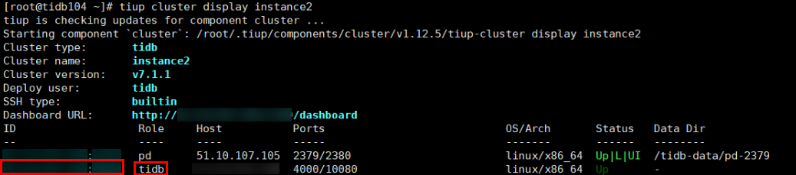

This section describes how to manually connect to a database and delete a table from the database.
Procedure
- Log in to the TiUP node.
- Run the following command to query the IP address and port number whose Role is tidb. Cluster name instance2 is used as an example.
tiup cluster display instance2
The following is an example of the command output.

- Run the following command to connect to the database. Obtain the username and password from the database administrator.
mysql -uUsername -hxx.xx.xxx.xx -PPort number -pPassword
- Run the following commands to delete a table from the database:
use Database;
DROP TABLE IF EXISTS Table;